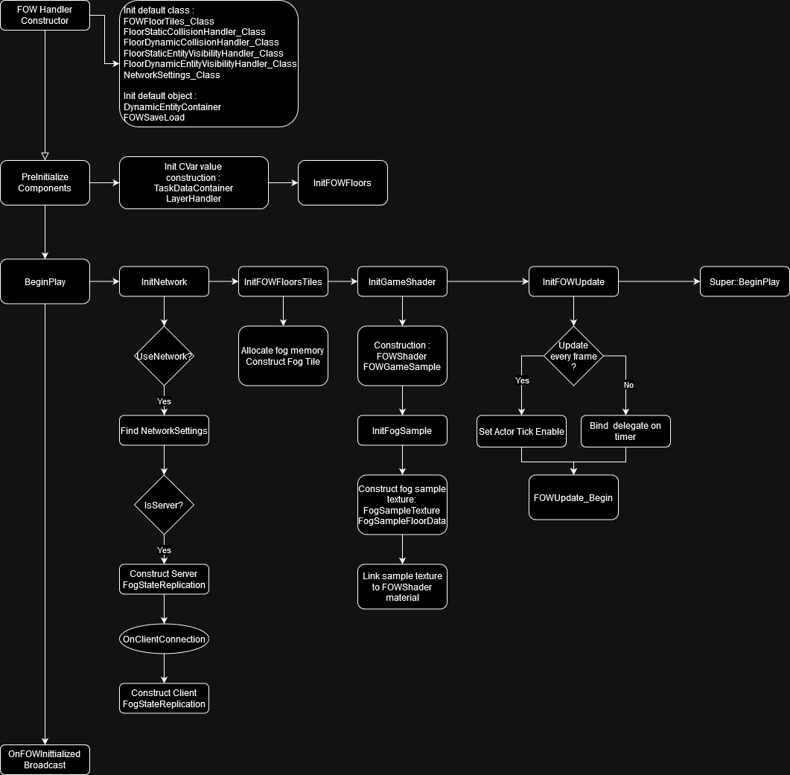
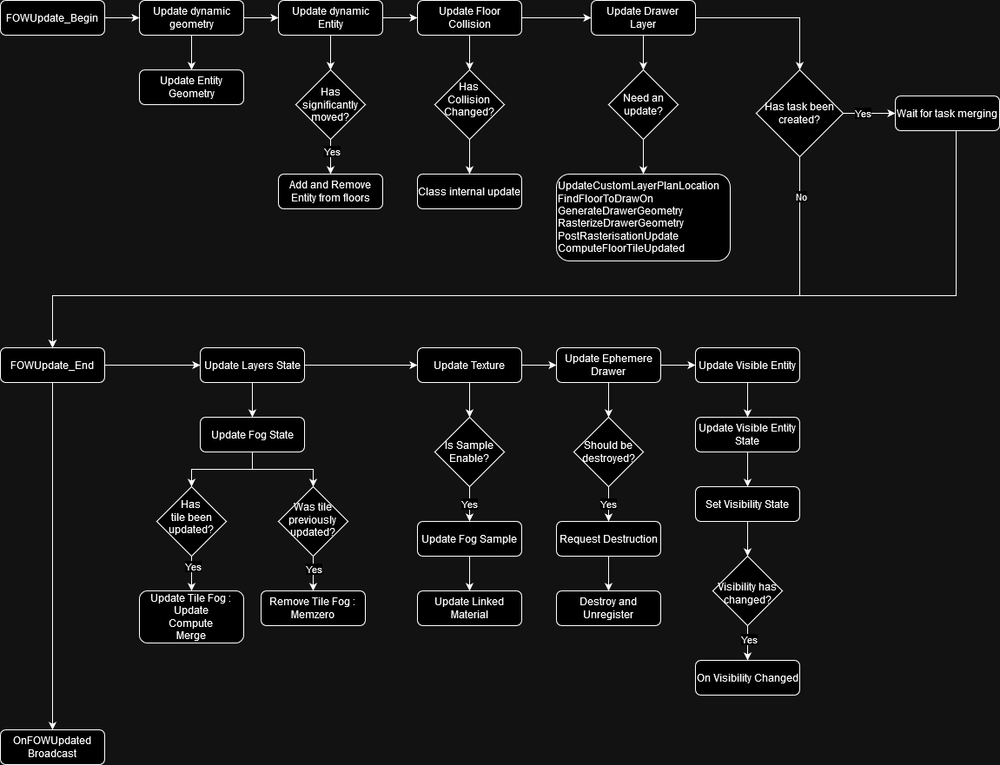

Contents
Documentation built with Unreal-Doc v1.0.9 tool by PsichiX
#Book
This book covers explanation of the Layered Fog Of War architecture. You will find implementation example, code explanation and how to make the best use of the FOW. This plugin is easy to use but might become painfull to understand when you need better performance from it
Pages
Documentation built with Unreal-Doc v1.0.9 tool by PsichiX
Getting Started
Table of Contents
The Fog Of War is Only a Texture
To understand the technology, you have to see the FOW as a texture:
By using a texture, it should be possible to create games with a "flat" map. Gameplay areas can't be superimposed, or you will discover undesirable parts of it. However, with multiple layers and by applying transparency, we can get through this problem.
Quick definition: A fog of war is a common game mechanic used in strategy and real-time strategy (RTS) games to simulate uncertainty and limited visibility. It obscures parts of the game map that are not currently within the player's line of sight or knowledge, typically represented by a shroud or darkness.
A FOW is just a set of data represented as a texture, which allows the computer to hide some part of the rendered frame from the player during the post-process pass. It will project the position of the rendered pixel onto a plane delimiting the FOW. The projection will then query the state of the fog texture to know if the player has sight on this pixel. It's a simple process of flattening all the assets onto a plane.
The texture generation is done by elements called "Drawers"; they will compute a texture fragment of what they see. Drawers can draw any shape to reveal an area. There are two different usages:
- Drawing circles which reveal everything around the player.
- Casting the collision geometry shadow to simulate the sight of the player.
Once every fragment is generated, they will be merged under the fog texture to be rendered.
Features
High Definition, Big Map
1. Intro
The Fog of War algorithms are simple in theory but heavy to update. To have a decent frame rate, you have to downgrade the texture precision to reduce the rasterization time of the drawers, the texture update on the GPU, or the GPU texture sampling time. The fog update being heavy was also an obstacle for game development. Maps had to be small for a high fog definition, or the definition had to be low for huge maps. I've wanted to prevent that and let everyone choose any precision without any repercussions.
2. Handler, Floor, Tile, Sample
The Fog Of War is split into floors representing parts of your level. You can have as many as you want, and you can juxtapose or even superpose them to give verticality. Every floor shares the same settings given from the handler and will have the same precision. They are also divided into tiles and snapped to a grid to simplify the merge and update process time. The FOW can have up to 8 visibility channels to represent fog. Only 2 channels are used in the given version to represent 3 states of fog:
- Seen: The player came earlier and is aware of the layout of the area.
- Visible: The player directly sees the area.
- Unseen: The player has never seen this area (meaning both of the channels are equal to 0).
It's up to you to find more usages of the 6 other channels. You can also use only one channel to make MOBA-like games where the map is fully visible.
3. Optimization for Large-Scale Projects
To overcome the update time, the FOW uses samples of fog to send to the GPU and uses binary compression of everything related to a texture. They are compressed such as 1 bit = 1 pixel. Doing so reduces the memory usage but also the pixel processing time by doing bitwise operations. Most of the update work is related to merging two textures, which means applying an "OR" operator between two textures. Since all the pixels are packed and our computer can use registers up to 512 bits, the FOW can also compute up to 512 pixels in one operation.
4. Architecture Repercussion
To allow the best usage of binary operation, channels had to be separated and can be seen as N different textures. Simplified representation of the texture
Normal texture: -> FOW texture:
RGBA, RGBA, RGBA -> RRR, GGG, BBB, AAA
RGBA, RGBA, RGBA -> RRR, GGG, BBB, AAA
RGBA, RGBA, RGBA -> RRR, GGG, BBB, AAA
Tons of AI
1. Intro
Projects using FOW are mostly games using lots of AI. It was one of the main objectives, being able to simulate thousands of units drawing fog. This plugin had to be ready for games like "Among Us" but also for RTS or MOBA like "Age Of Empires" or "League Of Legends." Once more, performance was the issue and had to be solved without impacting the precision or the map scaling.
2. Drawer, SharedDrawer, Entity, Rasterizer
Each player has a number of units represented in the game. Those units help him to navigate, discover, and fulfill the objective of the game. To discover the layout of the game, the FOW will use Drawers. Those drawers are components registered into the FOW, which will generate a fragment of fog represented as a bit array. This fragment is the representation of the sight of the owning actor. It can draw any shape and will provide its fragment during the floor update to generate the Fog Texture. However, merging thousand fragments is really inappropriate. It uses lots of memory, memory isn't aligned, lots of CPU cache is requested, and it doesn't respect patterns that accelerate computation. To ameliorate the process, the FOW follows the Data-Oriented Design (DOD) and allows developers to use Entities instead of drawers. Entities are the representation of an object in the game and will provide data to a "SharedDrawer," which will be able to update all registered entities during a single update.
To generate a fog fragment, every drawer has a reference to a rasterizer. Drawers are data containers designed to generate geometry that can be given to them. They are simple pieces of code that can be overridden for specific usage. In the current state, two rasterizers are provided:
- UFOW_R_TriangledGeometryV1, made to draw convex geometry from a set of vertices
- UFOW_R_CircleV1, made to draw a circle from one vertex
3. Optimization for Large-Scale Projects
To fasten the fragment generation process, the FOW packs data and follows DOD architecture.It takes profit of multithreaded processors by doing asynchronous updates and allows the FOW to make discrete updates which don't interfere with the game thread. In case of heavy updates, the FOW can be computed in many Engine frames to prevent game freeze.
The DOD and task system are an entry point to the GPU computation. Everything has been thought to make it possible and might be developed in the near future.
Vertical games
Introduction
It has been a challenge to allow everyone to create vertical top-down games. I took part in the development of "Alien Dark Descent," and it has been tough to implement ladders and stairs. However, the FOW couldn't dissociate the bottom from the top. So it was impossible to let the player discover the ground level and then discover the basement without a level transition. As explained a bit earlier, the Layered FOW is made out of floors that can be set up anywhere in the game. They will generate fog in the provided area, and drawers will remove it. Nothing is required from the user to make verticality!
GPU data transfer
Because of the GPU being the GPU, it was tough to go the simple way and send N textures representing the fog of floors. Plus, the update would have been super heavy. It was necessary to find a workaround to send data of each floor. The problem has been solved by packing floor fog samples into one texture; sample sizes are determined by the intersection of the camera frustum and the floor fog plane. However, a bigger texture will be required to update every floor.
To render correctly superposed floors, the material has to project and find the closest floors to query the fog state.
Networking
Introduction
Most of the top-down games we play are competitive or cooperative, which means that the game needs networking. On that behalf, the FOW has minimal Replication implementation. It's based on the fact that every player runs the same simulation, which means that every client actor has the same position as the server. If this is correct, there is no need to replicate the state of the FOG through the network; the only thing to synchronize is which drawer draws for which team.
FogStateReplication Client/Server
FogStateReplication is responsible for the synchronization between the client and the server. It's responsible for fog synchronization; the server is able to send the FOW state to any client for game initialization. And will provide a team ID to every client. This ID is used in each game instance to enable/disable drawers with the same ID. Once the state and IDs synchronize, nothing else will go through the network regarding the FOW.
Replication and Team limitation
To allow FOW state replication, the server has to be aware of the state of each team. It means that a game using 2 channels to represent "Seen" and "Visible" state can only have up to 4 teams. I've talked about it a bit earlier; the FOW can use at the maximum 8 channels. The replication becomes not only a limitation for games by limiting the team number, but also a performance limitation. The server user will have to constantly compute the fog of each team even if only 1 team is displayed. Clients don't have this performance issue since they will update only the attributed team.
Nevertheless, there is a workaround to palliate this limitation. It's possible to tell the server to compute only the user team. The network will still work, but the FOW state won't be able to be synchronized in case of late connection. One more thing to understand is that synchronization is useful only for a certain type of fog. The client doesn't need any synchronization if the game uses the Visible channel. Once every Drawers will be synchronized with the correct team, they will remove fog at their location to reproduce the state on the server.
To summarize, you can replicate the FOG state but you will have a team limitation depending on the number of channels used per team. If you don't enable this replication and let the server compute the fog from its player ID you can have as much team as you want!
Developer playground
Introduction
This part is a bit more personal. I've wanted my plugin to be modular, with replaceable parts. I'm always thinking that a better version exists which brings the necessity to slice my code and make it overridable. It even became a pattern for me, making small modules and preventing to the maximum dependencies. On that behalf, the plugin has many settings variables representing object classes to replace the provided ones.
I'm calling it a playground because it can be really simple modification to test a C++ functionality. There are lots of modules that are containers where you can try to switch an array for a map, or where you can add an acceleration structure to help the query function. As an example, I've made a naive collision system testing collision with every registered collider, but I've also made another one using an AABB tree to query the colliders in bounds.
This is Where the Fun Begins!
I'll try to provide everything to let you replace the module and play with the code in the source files. Here is the list of the modules and their working field:
-
UFOW_Rasterizer: You can challenge yourself to find the fastest way to draw a triangle. You can also work on specific rasterizers specific to draw geometry from formulas (Cone, torus, rectangle ...)
-
UFOW_CollisionHandler: Key stone of the drawers computation time when casting collision shadow. Accelerate the collider querying with structure (AABB tree, Spatial hashing, octree ...)
-
UFOW_OcclusionBuffer: Occlusion system for the CollisionHandler to ignore collider. R&D around the occlusion, the default one use 1D depth buffer
-
TFOW_Tile_Base: Merge the drawer fog fragment. You can play with SIMD instruction and find a faster way to merge everything
-
UFOW_DrawerComponent: Implement your custom drawer. You can play with tasks and multithreading
-
UFOW_SaveLoad: Generate a TArray
to be written in a file. You can play with pointers and compression -
AFOW_FogStateReplication: If you need to adapt the network to your pipeline
-
AFOW_Handler: If you need to adapt the loading or update pipeline
-
UFOW_Floor: If you need to adapt the update pipeline
Conclusions
Everything works correctly by default; however, you might need to tweak a few settings and have a good understanding of how the entities work for games with lots of AI. You can make extremely vast games without vertical limits. A simple replication implementation is already done allowing you to make online games. If you are curious you're more than welcome to replace everything !!!! :)
Documentation built with Unreal-Doc v1.0.9 tool by PsichiX
Architecture
This section will explain in-depth how the Fog Of War has been thought out. It'll give you the keys to tweak everything and set up the plugin to fit your game the best possible way.
Keep in mind that the Layered FOW doesn't need any modification to be used in game; only if performances are an issue, modifications will be necessary.
Everything is Tile-shaped
To allow high precision and large scale game, everything has been cut into pieces which can be seen as tiles. This tiling system is really efficient for optimization and multithreading. The FOW is designed this way:
- FOWHandler: the biggest piece holding every data. It's a singleton, and only one instance can exist in the level.
- FOWFloors: 3D boxes held by the Handler, where the fog will be applied. There is no number or position limitation. It will store a bits array of the fog state and everything necessary to generate fog fragment.
- FOWTiles: Defined by a power of 2 of fog pixels, it will create a grid for every element interacting with the fog. Used to merge fog fragment to the result texture in the Floors.
- FOWTextureSample: The bond between CPU and GPU, it will collect Floors bit array to send it to the GPU via a texture.
The logic is managed by Entities
The Entities are a suite of interfaces allowing data generation or querying. They are self-dependent and don't need any update, no API is provided unless two methods to enable/disable the entity. The FOW will do all the updates it needs to correctly generate the fog state of the frame. Entities exist in 3 different forms inheriting from a base interface, plus one a bit different, designed for a late purpose:
- CollisionEntity: Provide methods to gather collision from an object. Collisions are used by the drawers to cast shadow. The entity will be stored in CollisionHandler.
- DrawingEntity: Provide methods to collect drawing settings from an object. The entity will be registered to shared drawer to generate fog fragment.
- VisibilityEntity: Provide methods to collect object size and location to update its visible state depending on the fog.
- GeometryEntity: It doesn't derive from the Entity base class; its purpose is to hold geometry data to be used by entities (calling it GeometryEntity was a mistake).
Pages
Documentation built with Unreal-Doc v1.0.9 tool by PsichiX
Handler
Table of contents
Explanation
class: AFOWHandler is a singleton used to store Floors
and used to change the Fog settings (Pixel size, Encoding, Collision system ...). It defines
the initialisation and the update loop. All initialisation happens during the begin play unless
for the floor generation that is instantiated straight into the editor.
Settings
Editor debug setting
- "ShowGrid": display the grid delimited by the tile. Floors are snapped to this grid.
- "ShowFloors": display the 3D box representing the floors. The pink square is the real position of the floor, it will be aligned to the grid. The yellow square is the 3D Fog representation.
Fog setting
- Change the fog dimension and precision by changing "PixelSize" and adding floors in the "FOWFloors" array.
- Change the tile dimension by modifying their pixel number from "TilePixelNumber" Enum. Changing tile size might become interesting for high fog precision, it will reduce the number of tile merging and will allow the usage of bigger register for the tile merging.
- Change the default fog status at start with "ChannelToClearAtStart". Useful if you have a map with hidden area and the rest visible. Use "AFOW_DrawingE_Custom" with "UFOW_FloorStartUpLayer" to add fog where it's needed. Fog will be cleared and re-draw during the initialisation and the very first frame.
- Change "LayerHandler_Class" to organise the layer merging as you pleased.
- Change "FOWFloorTiles_Class" to make the best fit with "TilePixelNumber", but also to set the number of channels used by each team for your game.
Update settings
- Change the right of the FOW to use or not multithreading/Task/ComputeShader (compute shader not done yet).
- Change the update rate of the FOW but I do not recommend using it, the render will be impacted by it. It's better to enable the task and let the FOW do discrete updates if necessary.
Module settings
Modules that can be changed in the handler are stored under the "Settings|Class" section. There is a differentiation between static and dynamic because some modules can be more or less optimized depending on those two parameters (The AABBCollisionHandler has an update time super long for dynamic objects).
Rendering settings
- Change "FOWShader_Class" to change the render system of the FOW. 3 different materials are provided
with the plugin:
- "MPP_FOW_Floors": for flat game
- "MPP_FOW_FloorsTransparency": for games with verticality
- "MUI_FOW_Minimap": for the minimap
Initialisation
The initialisation of the FOW happens in the begin play and can be delayed if your pipeline needs it. Initialization is split into many sections:
- "InitNetwork" will create a "Replicated" environment only if the game isn't standalone and if the layer setting class is correctly set. Set network setting as the right to override many values from the Handler to provide the accessibility to different clients. Thus it has to be executed first.
- "InitTeams" isn't used and will be deleted.
- "InitFOWFloorsTiles" Allocates the memory used by the floor. The FOW cannot do anything without it. The tiles must be initialized before the game shader.
- "InitGameShader" Generates "FOWTextureSample" that will be linked to the instantiated "FOWShader_Class". You can override this to generate more material if needed. However, you have the possibility to create and register texture sample at any time; don't force yourself to do everything in this method.
- "InitFOWUpdate" is the most interesting method. If you have pipeline trouble, I recommend to let every other initialization call and to delay only this one. Until this call is made, no update from the fog but even from this entity or the collision system will happen. Please be very cautious to call "FinalizeInitialization" just after the call of this method.
Visual representation of the initialisation pipeline

Updates
By default, the update happens during the actor tick. Every component of the FOW will be updated during this sequence unless for the "FOWTextureSample". The update will be done at once if no asynchronous tasks are requested and will be managed by two methods:
- "FOWUpdate_Begin" manages every update that needs to happen to let drawers generate fog fragment. It'll update the dynamic Entities first and then the collision. It will also be responsible for multithreading initialization.
- "FOWUpdate_End" is called after that the drawers have generated their fog fragment. Depending on the usage of task or compute shader, it'll be called right after the begin update or later in the frame. Fog fragment will be sorted and distributed to floors to update the fog state. Once updated transient drawer will be deleted and all "visibleEntity" will update their state to turn on/off their render.
The "FOWTextureSample" has a special place to be updated because of the engine camera update time. To generate fog sample the sample has to be aware of the position of the camera; however, Unreal updates their position at the end of the tick. To prevent sample from sending wrong texture information, their updates happen at the very end of the world tick. There is a second reason of why their update is separated and independent. In case of long update, the FOW can skip an update frame if using asynchronous update. It doesn't impact the render to not change the fog state, however, fog data on the GPU has to be perfectly synchronized with game or artifacts might show up.
Visual representation of the Updates pipeline

Documentation built with Unreal-Doc v1.0.9 tool by PsichiX
Floor
Table of contents
Explanation
Documentation built with Unreal-Doc v1.0.9 tool by PsichiX
C++ API Reference
Classes
AFOW_HandlerIFOW_CollisionEntity_InterfaceIFOW_DrawingEntity_InterfaceIFOW_Entity_InterfaceIFOW_GeometryEntity_InterfaceIFOW_VisibilityEntity_InterfaceUFOW_CollisionHandlerUFOW_DrawerComponentUFOW_Drawer_SharedUFOW_EntityContainerUFOW_EntityVisibilityHandlerUFOW_FloorUFOW_LayerHandlerUFOW_LayerSettingUFOW_RasterizerUFOW_TextureSampleUFOW_Tile_ClassUFOW_VisibilityE_Component
Documentation built with Unreal-Doc v1.0.9 tool by PsichiX
Classes
AFOW_HandlerIFOW_CollisionEntity_InterfaceIFOW_DrawingEntity_InterfaceIFOW_Entity_InterfaceIFOW_GeometryEntity_InterfaceIFOW_VisibilityEntity_InterfaceUFOW_CollisionHandlerUFOW_DrawerComponentUFOW_Drawer_SharedUFOW_EntityContainerUFOW_EntityVisibilityHandlerUFOW_FloorUFOW_LayerHandlerUFOW_LayerSettingUFOW_RasterizerUFOW_TextureSampleUFOW_Tile_ClassUFOW_VisibilityE_Component
Documentation built with Unreal-Doc v1.0.9 tool by PsichiX
Class: AFOW_Handler
class FOGOFWAR_API AFOW_Handler
: public AActor;
Reflection-enabled
Specifiers:
- abstract
The Fog Of War Handler is the base class of the plugin, it's a sigleton and you cannot have many instance of it even when doing networked game with replication
The Fog Of War is highly parametrable and let the developers override almost everything. You might want to get ride of some functionality or maybe to write a more optimized code
The handler hasn't any main logic, it's purpose is to:
- Have general settings
- Initialise FOW Object
- Run the update
- Contain FOW element instancies
You have the possibility to change the core module of the FOW by changing the default class used int the settings
- If you want a custom FOWHandler be sure to override FindLevelFOWHandler, you can use
AFOW_Handler_Defaultas example- Go to the FOWFloors settings and display the parametters to shape the floor to your needs
If you need to modify the initialization to fit your pipeline, override those function called by the BeginPlay
- void InitNetwork();
- void InitTeams();
- void InitFOWFloors();
- void InitFOWFloorsTiles();
- void InitGameShader();
- void InitFOWUpdate();
- void FinalizeInitialization(); Please be really carefull to not finalize the initialization if the floor or game shader init havn't be called
Documentation built with Unreal-Doc v1.0.9 tool by PsichiX
Class: IFOW_CollisionEntity_Interface
class FOGOFWAR_API IFOW_CollisionEntity_Interface
: public IFOW_Entity_Interface;
Collision entities are the sight blocker to prevent fog discovering between rooms.
By design any child implementing this class should also implement IFOW_DrawingEntity_Interface to enable optimisation
- Depending of the situation you can have issues because of collision drawing optimisation, Override ShouldDrawColliders and return false to disable it
- You can disable the whole collision drawing optimisation by disabling DrawFOWCollider in
UFOW_LayerHandler
Contained by : UFOW_CollisionHandler
For more information of the entity virtual fonction please see IFOW_Entity_Interface.
Documentation built with Unreal-Doc v1.0.9 tool by PsichiX
Class: IFOW_DrawingEntity_Interface
class FOGOFWAR_API IFOW_DrawingEntity_Interface
: public IFOW_Entity_Interface;
Drawing entity used to modify the state of the fog depending of the given UFOW_LayerSetting
- Override GetEntityLayerSetting to give the correct layer setting
- Call SetEntityTeam to change the entity team in case of multiplayer game
Contained by : UFOW_Drawer_Shared
For more information of the entity virtual fonction please see IFOW_Entity_Interface.
Documentation built with Unreal-Doc v1.0.9 tool by PsichiX
Class: IFOW_Entity_Interface
class FOGOFWAR_API IFOW_Entity_Interface;
Base class for every entity interface, IFOW_GeometryEntity_Interface is an exception subject to a retake
Entities are by default automatically updated by the system if (IsStatic == false && FloorVolatile)
- FloorVolatile express the posibility to move from a floor to another
Contained by : UFOW_EntityContainer
Warning : every multiple inheritance have specifique overriding rule regarding methodes finishing by _M.
You can use AFOW_CustomCollision as examble for your custom entity implementation
Documentation built with Unreal-Doc v1.0.9 tool by PsichiX
Class: IFOW_GeometryEntity_Interface
class FOGOFWAR_API IFOW_GeometryEntity_Interface;
Geometry entity is a data container used by entities to modify fog or create collision.
- Geometries are by default automatically updated by the system if (static == false || modular)
- Override UpdateEntityGeometry to make your modification
Contained by : UFOW_EntityContainer
Warning : The geometry system should be retaken to make the geometry aligned in memory
Documentation built with Unreal-Doc v1.0.9 tool by PsichiX
Class: IFOW_VisibilityEntity_Interface
class FOGOFWAR_API IFOW_VisibilityEntity_Interface
: public IFOW_Entity_Interface;
Visibility entity used to automatically update the ingame visibility of the UObject inherited from it
- VisibilityEntity are by default automatically updated
- Override OnVisibilityStateChanged to update the visibility state
- You can find a default example by looking at
UFOW_VisibilityComponent.
Contained by : UFOW_EntityVisibilityHandler
For more information of the entity virtual fonction please see IFOW_Entity_Interface.
Documentation built with Unreal-Doc v1.0.9 tool by PsichiX
Class: UFOW_CollisionHandler
class FOGOFWAR_API UFOW_CollisionHandler
: public UObject;
Reflection-enabled
Collision handler is used to accelerate the querying of collider to generate sight mask
Every handler is associated to its UFOW_CollisionHandlerQuery class
Contained by : UFOW_Floor
Documentation built with Unreal-Doc v1.0.9 tool by PsichiX
Class: UFOW_DrawerComponent
class FOGOFWAR_API UFOW_DrawerComponent
: public UActorComponent;
Reflection-enabled
Specifiers:
- Abstract
- Blueprintable
The drawer component compute fog modification, however it doesn't apply it.
They are small chunk of fog aligned to the world grid, they can be seen as canvas.
Their update are the slowest because of the collision querying and the geometry rasterization.
By default they are mean to be added to each actor modifying the fog however the memory allocation and merging can become very time consuming.
If your game needs higher performance take a look at IFOW_CollisionEntity_Interface which will request the creation of a UFOW_Drawer_Shared to the system.
It is possible to :
- Create custom drawer by inheriting from this class and by overriding GenerateDrawerGeometry to inject your custom geometry
- Change the rasterization process by creating a new
UFOW_Rasterizerand by changing the default class used in theUFOW_LayerSetting- Change the collision querying by creating a new
UFOW_CollisionHandlerand by changing the default class used in theAFOW_Handler
Contained by : AFOW_Handler
Documentation built with Unreal-Doc v1.0.9 tool by PsichiX
Class: UFOW_Drawer_Shared
class FOGOFWAR_API UFOW_Drawer_Shared
: public UFOW_DrawerComponent;
Reflection-enabled
Specifiers:
- Blueprintable
- BlueprintType
Meta Specifiers:
- BlueprintSpawnableComponent
Drawer designed to hold IFOW_DrawingEntity_Interface and batch their update under one process
Contained by : AFOW_Handler
Documentation built with Unreal-Doc v1.0.9 tool by PsichiX
Class: UFOW_EntityContainer
class FOGOFWAR_API UFOW_EntityContainer
: public UObject;
Reflection-enabled
Specifiers:
- Abstract
- EditInlineNew
Dynamic entity and geometry container. Called by the AFOW_Handler to update their status
Contained by : AFOW_Handler
Documentation built with Unreal-Doc v1.0.9 tool by PsichiX
Class: UFOW_EntityVisibilityHandler
class FOGOFWAR_API UFOW_EntityVisibilityHandler
: public UObject;
Reflection-enabled
Update the visibility of every registered object implementing IFOW_VisibilityEntity_Interface.
The class is instantied twice in every UFOW_Floor for Static and dynamic entity.
Each entity will query the FOW state at location or for an AABB on the owner FOW_Floor.
- Change the visibility system by creating a new
UFOW_EntityVisibilityHandlerand by changing the default class used in theAFOW_Handler- Override OnVisibilityStateChanged methode in IFOW_VisibilityEntity_Interface to apply custom modification
- Bind your object to OnVisibilityChanged if you are using FOW_VisibilityComponent
Contained by : UFOW_Floor
Properties
-
VisibleEntitiesprotected: TArray<TScriptInterface<IFOW_VisibilityEntity_Interface>> VisibleEntities;
Reflection-enabled
Specifiers:
- BlueprintReadOnly
- Category = Internal
Hold the visible entity
Methods
-
PrepareForWorldDestructionpublic: virtual void PrepareForWorldDestruction();
Reflection-enabled
Specifiers:
- BlueprintCallable
- Category = Core
Call before the world destruction to prevent all Remove or Add operation
-
UpdateVisibilityStatepublic: virtual void UpdateVisibilityState( const UFOW_Floor* Floor, uint8 FOWGlobalSettingFlags );
Reflection-enabled
Specifiers:
- BlueprintCallable
- Category = Core
Update the visibility state of all registered entity
Arguments
-
Floorconst UFOW_Floor* Floor -
FOWGlobalSettingFlagsuint8 FOWGlobalSettingFlags
Documentation built with Unreal-Doc v1.0.9 tool by PsichiX
Class: UFOW_Floor
class FOGOFWAR_API UFOW_Floor
: public UObject;
Reflection-enabled
Specifiers:
- EditInlineNew
The floor is an area where a bit mask texture is generated to create fog.
Each floor bit mask will be sliced and attributed to a TFOW_Tile_Base.
It's responsible of the fog state update by querying the fog chunk of every drawer.
Every levels can have many instances of floor to allow verticallity for your game.
Each floor has a collision handler static and dynamic and is responsible for the collision update.
- Change the collision system by creating a new
UFOW_CollisionHandlerand by changing the default class used in theAFOW_Handler- Change the visibility system by creating a new
UFOW_EntityVisibilityHandlerand by changing the default class used in theAFOW_Handler
Contained by : AFOW_Handler
Warning : supperposed floor will work correctly only if you change the PP material in AFOW_Handler
Documentation built with Unreal-Doc v1.0.9 tool by PsichiX
Class: UFOW_LayerHandler
class FOGOFWAR_API UFOW_LayerHandler
: public UObject;
Reflection-enabled
Specifiers:
- Blueprintable
The layer handler allow you to change the computation order of the different UFOW_LayerSetting
- Layer will modify the fog state in the given order, which means that a modification can be overriden by an other layer
- Enable or disable the collision drawing optimisation by changing DrawFOWCollider
Documentation built with Unreal-Doc v1.0.9 tool by PsichiX
Class: UFOW_LayerSetting
class FOGOFWAR_API UFOW_LayerSetting
: public UObject;
Reflection-enabled
Specifiers:
- Abstract
- Blueprintable
Layer setting is made to configure how an entity or a drawing component will modify the fog
Documentation built with Unreal-Doc v1.0.9 tool by PsichiX
Class: UFOW_Rasterizer
class FOGOFWAR_API UFOW_Rasterizer
: public UObject;
Reflection-enabled
Specifiers:
- abstract
The rasterizer convert the geometries to a bit mask texture representing the state of the FOW.
The reasterizer is never instantied, the default object is always used witch means that you cannot use variable in the class
- Change the rasterization process by creating a new
UFOW_Rasterizerand by changing the default class used in theUFOW_LayerSetting
Documentation built with Unreal-Doc v1.0.9 tool by PsichiX
Class: UFOW_TextureSample
class FOGOFWAR_API UFOW_TextureSample
: public UObject;
Reflection-enabled
Specifiers:
- abstract
- Blueprintable
The texture sample collect sample of FOW from the UFOW_Floor to write it inside a texture that will be bind to materials
Contained by : AFOW_Handler
Documentation built with Unreal-Doc v1.0.9 tool by PsichiX
Class: UFOW_Tile_Class
class FOGOFWAR_API UFOW_Tile_Class
: public UObject;
Reflection-enabled
Specifiers:
- Abstract
TFOW_Tile_Base aren't a UCLASS to prevent saturation of GC, thus they are all wrapped by a FOW_Tile_Class and allocated the old way.
Tiles are used to compute fog result of the UFOW_DrawerComponent and merge it depending of the UFOW_LayerSetting under a bit array that will feed the UFOW_TextureSample sent to the GPU.
You can simply create your own tile update by overriding this class and by using the templated class TFOW_Tile.
you will have to create 3 templated classes to finish your fully custom tiles :
- Update
- Compute
- Merge
- Override GetTileBitsFormat to correctly set the tile pixel number for the FOW
- Override GetTileChannelNbr to correctly set the channels number per tiles
- Override GetTilePackagingFormat to correctly set the packaging format use by the FOW
Contained by : UFOW_Floor
Warning : I highly advise to use the EnumFOWTilePackagingFormat::PACKED format for optimisation reason
Documentation built with Unreal-Doc v1.0.9 tool by PsichiX
Class: UFOW_VisibilityE_Component
class FOGOFWAR_API UFOW_VisibilityE_Component
: public UActorComponent
, public IFOW_VisibilityEntity_Interface;
Reflection-enabled
Specifiers:
- ClassGroup = Custom
Meta Specifiers:
- BlueprintSpawnableComponent
Can be added to any actor which need to be hidden when the player hasn't sight on it
- Enable IsEntityFloorVolatile to use the default visibility update
- Bind yourself to OnVisibilityChanged to customise the visibility update
Contained by : UFOW_EntityVisibilityHandler
Properties
-
OnVisibilityChangedpublic: FOnVisibilityChangedd OnVisibilityChanged;
Reflection-enabled
Specifiers:
- BlueprintAssignable
- BlueprintCallable
- Category = FOW
Called every time the Visibility state has changed
Documentation built with Unreal-Doc v1.0.9 tool by PsichiX